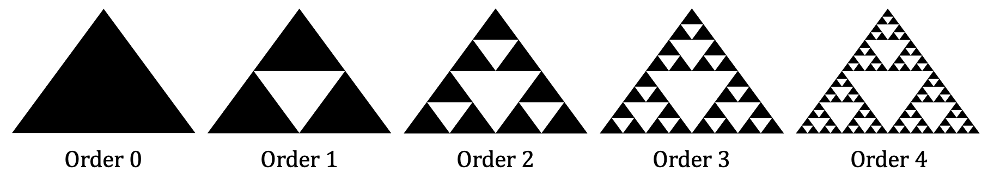
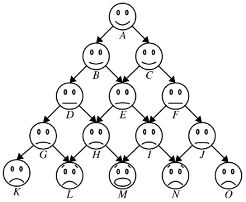
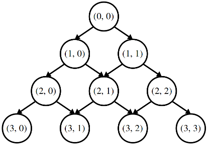

Due Friday, January 28 at 10:30 am
- Submissions received by the due date receive a small on-time bonus.
- All students are granted a pre-approved extension or "grace period" of 24 hours after the due date. Late submissions are accepted during the grace period with no penalty.
- The grace period expires Sat, Jan 29 at 10:30 am, after which we cannot accept further late submissions.
- All due dates and submission times are expressed in Pacific time.
You are permitted to work on this assignment in pairs.
This assignment is all about recursive problem-solving. You've practiced writing recursive functions in Assignment 1 and in section, and now it's time to take those skills, combine them with the techniques we've covered over the past couple of lectures, and make some pretty impressive pieces of software.
We've chosen these problems because we think they're a great sampler of the different sorts of fundamental recursive techniques that we've explored. We hope that you find these problems interesting and get a better feel for what recursion can do!
This assignment has four parts to it, and you have seven days to complete it. We recommend that you start this assignment early and make slow, steady progress throughout the week. Here's a recommended timetable:
- Complete the Sierpinski Triangle within a day of this assignment going out.
- Complete Human Pyramids within two days of this assignment going out.
- Complete What Are YOU Doing? within four days of this assignment going out.
- Complete Shift Scheduling within seven days of this assignment going out.
Recursive problem-solving can take a bit of time to get used to, and that's perfectly normal. Putting in an hour or two each day working on this assignment will give you plenty of time to adjust and gives you a comfortable buffer in case you get stuck somewhere.
As always, feel free to get in touch with us if you need any assistance. We're happy to help out!
You are welcome to work in pairs on this assignment. If you do, please note that
it is not a good idea to have one partner do two of the four parts of this assignment and to have the other partner do the other two, that
you are responsible for understanding how to solve all of the problems given out here, regardless of how you divvy up the work, and that
if you are working in pairs, both partners should be looking at the same screen the whole time the assignment is being worked on.
Historically, students that have split the work in half have had substantially below-average learning outcomes in the course, especially when it comes to the exams. On the other hand, students that sit at the same computer and talk through what they're doing with their partner tend to have substantially above-average learning outcomes in the course.
Stated succinctly, pair programming is about working together, not working separately.
Assignment Logistics
Starter Files
We provide a ZIP of the starter project. Download the zip, extract the files, and double-click the .pro file to open the project in Qt Creator.
Resources
Feel free to check out our Python-to-C++ guide if you're moving from Python to C++. Also, check out our style guide, guide to testing, and debugging guide.
Getting Help
Keep an eye on the Ed forum for an announcement of the Assignment 3 YEAH (YEAH = Your Early Assignment Help) group session where our veteran section leaders will answer your questions and share pro tips. We know it can be daunting to sit down and break the barrier of starting on a substantial programming assignment – come to YEAH for advice and confidence to get you on your way!
We also here to help if you get run into issues along the way! The Ed forum is open 24/7 for general discussion about the assignment, lecture topics, the C++ language, using Qt, and more. Always start by searching first to see if your question has already been asked and answered before making a new post.
To troubleshoot a problem with your specific code, your best bet is to bring it to the LaIR helper hours or office hours.
Part One: The Sierpinski Triangle
One of the most famous self-similar fractals is the Sierpinski triangle. As with many self-similar images, it's defined recursively:
- An order-0 Sierpinski triangle is a regular, filled triangle.
- An order-n Sierpinski triangle, where n > 0, consists of three Sierpinski triangles of order n – 1, each half as large as the main triangle, arranged so that they meet corner-to-corner.
For example, here are Sierpinski triangles of the first few orders:

Take a minute to confirm that the order-1 Sierpinski triangle indeed consists of three smaller copies of the order-0 Sierpinski triangle, that the order-2 Sierpinski triangle is formed from three smaller copies of the order-1 Sierpinski triangle, etc.
As a note, although it might look like we're drawing a single black triangle with a lot of white triangles inside it, that's actually not the case. Every triangle drawn here is black; the white triangles represent places where no triangle was drawn.
Your task is to implement a function
void drawSierpinskiTriangle(GWindow& window,
double x0, double y0,
double x1, double y1,
double x2, double y2,
int order)
that takes as input a window in which to draw the Sierpinski triangle, coordinates of the three points defining the corners of that triangle, and the order of that triangle, then draws the Sierpinski triangle of that order. If the order parameter is less than zero, use the error() function to report an error.
To draw a triangle, you can use this helpful drawTriangle function that we've provided:
void drawTriangle(GWindow& window,
double x0, double y0,
double x1, double y1,
double x2, double y2);
This function takes in a GWindow in which to draw the triangle, along with the coordinates of its three corners, then draws a black triangle with the specified corner coordinates.
To summarize, here's what you need to do:
Part 1 Requirements
- Implement the
drawSierpinskiTrianglefunction inSierpinski.cpp. Don’t forget to handle the case where the order is negative. - Use the “Interactive Sierpinski” option to check your work. In particular, make sure your triangle looks correct after dragging the corner points around and changing the order of the triangle via the slider in the bottom of the window.
Once you've gotten that working, click "Sierpinski Bungee Jump" to see just how deep the recursion rabbit hole goes. And yes, that's your code powering the bungee jump. We're just specifying coordinates. 😃
Some notes on this problem:
-
Draw pictures! The meat of this part of the assignment is figuring out where each triangle's corners are, and that's much easier to do with a schematic in front of you.
-
Some helpful math: the midpoint of a line segment whose endpoints are (x₁, y₁) and (x₂, y₂) is located at position ((x₁ + x₂)/2, (y₁ + y₂)/2). You may find this useful when determining where the corners of the smaller triangles are.
-
The three corner points of the triangle don't necessarily have to form an equilateral triangle or be parallel to the base or side of the window. There isn't any particular ordering to which corner is given by (x₀, y₀), which is given by (x₁, y₁), and which is given by (x₂, y₂).
-
Repeating a point from earlier – you should only draw the black triangles that make up the Sierpinski triangle. The white parts of the triangle are, in a sense, "negative space;" they're the regions where nothing is drawn.
-
The only function you should call to draw things in the window is
drawTriangle, which we mentioned earlier in this handout. You don't need to, say, call thedrawPolarLinefunction from lecture or anything like that. -
Don't forget to call
error()in the case where the order is less than zero. -
Our coordinate system uses real numbers. Remember that C++ has separate types for integers and real numbers and be careful not to mix the two up.
Part Two: Human Pyramids
A human pyramid is a way of stacking people vertically. With the exception of the people in the bottom row, each person splits their weight evenly on the two people below them in the pyramid.
For example, consider the following human pyramid:

In the pyramid shown above, person A splits her weight across people B and C, and person H splits his weight – plus the accumulated weight of the people he's supporting – onto people L and M. It can be mighty uncomfortable to be in the bottom row, since you'll have a lot of weight on your back! In this question, you'll explore just how much weight that is. Just so we have nice round numbers here, let's assume that everyone in the pyramid weighs exactly 160 pounds.
Person A at the top of the pyramid has no weight on her back. People B and C each carry half of person A's weight, so each shoulders 80 pounds. Uncomfortable, but not too bad.
Now, let's consider the people in the third row. Focus on person E. How much weight is she supporting? Well, she's directly supporting half the weight of person B (80 pounds) who is immediately above and to the left of her, and half the weight of person C (80 pounds) who is immediately above and to the right of her. On top of this, she's feeling some of the weight people B and C are carrying. Half of the weight that person B shoulders (40 pounds) gets transmitted to person E and half the weight person C shoulders (40 pounds) similarly gets sent down to person E, so person E ends up feeling an extra 80 pounds. That means she's supporting a net total of 240 pounds. That's going to be noticeable!
Not everyone in that third row is feeling the same amount, though; let's take person D for example. The only weight on person D comes from person B in the row above them to their right, because no one is sitting above their left shoulder. Person D therefore ends up supporting
- half of person B's body weight (80 pounds), plus
- half of the weight person B is holding up (40 pounds),
so person D ends up supporting 120 pounds, only half of what E is feeling! Going deeper in the pyramid, how much weight is person H feeling? Well, person H is supporting
- half of person D's body weight (80 pounds),
- half of person E's body weight (80 pounds), plus
- half of the weight person D is holding up (60 pounds), plus
- half of the weight person E is holding up (120) pounds.
The net effect is that person H is carrying 340 pounds – ouch! A similar calculation shows that person I is also carrying 340 pounds – can you see why? Compare this to person G. Person G is supporting
- half of person D's body weight (80 pounds), plus
- half of the weight person D is holding up (60 pounds),
for a net total of 140 pounds. That's a lot, but it's not nearly as bad as what person H is feeling! Finally, let's look at poor person M in the middle of the bottom row. How is he doing? Well, he's supporting
- half of person H's body weight (80 pounds),
- half of person I's body weight (80 pounds),
- half of the weight person H is holding up (170 pounds), and
- half of the weight person I is holding up (170 pounds),
for a net total of 500 pounds. Yikes! No wonder he looks so unhappy.
There's a nice, general pattern here that lets us compute how much weight is on each person's back:
- Each person weighs exactly 160 pounds.
- Each person supports half the body weight of each of the people immediately above them, plus half of the weight that each of those people are supporting.
The question then becomes – given some person in the pyramid, how much weight are they supporting?
Milestone 1: The Initial Implementation
Using the pattern mentioned above, as your first milestone for this problem, write a recursive function
double weightOnBackOf(int row, int col, int pyramidHeight);
that takes as input the row and column number of a person in a human pyramid, along with the number of rows in the pyramid (its height), then returns the total weight on that person's back.
The coordinate system we're using for these pyramids works as follows. Rows increase from top to bottom. The topmost row is row 0, the row below that is row 1, then row 2, etc. Columns increase from left to right, with the leftmost person in each row being in column 0, the person to their right being in column 1, etc.

In our previous example, person A would be at position (0, 0) since she's at the top of the pyramid. Person B would be at position (1, 0) since she's the leftmost person in the next row down, and so on and so forth, until Person O, who is at position (4, 4). Recall that in our previous pyramid there were 5 rows and the bottommost row has 5 people in it, people K through O.
If the provided (row, col) position passed into weightOnBackOf is out of bounds you should use the error() function to report an error. For example, if you're asked to look up position (-1, 0), or position (2, 3), you'd always report an error. Position (3, 1) is in-bounds provided that the pyramid height is at least four, but would be out of bounds if the pyramid height was one, two, or three.
Your implementation of weightOnBackOf must be implemented recursively. Test your solution thoroughly! You should write at least one test before moving on.
To summarize, here's what you need to do:
Milestone 1 Requirements
- Add at least one test to
HumanPyramids.cppto cover a case not tested by the other test cases. This is a great opportunity to check that you understand the problem setup. - Implement the
weightOnBackOffunction from HumanPyramids.cpp to report the weight on the back of the indicated person in a human pyramid. Test your solution thoroughly before proceeding, noting that your implementation will be slow if you look deep in the pyramid. Don’t forget to callerror()if the input coordinates are out of bounds!
Some notes on this first milestone:
- Remember that the
intanddoubletypes are distinct in C++, and be careful not to mix them up. Your weight calculations should be done withdoubles. - Due to the way that the
doubletype works in C++, the values that you get back from your program in large pyramids might contain small rounding errors that make the value close to, but not exactly equal to, the true value (we're talking about very small errors – less than a part in a thousand). Don't worry if this happens.
Milestone 2: Speeding Things Up
When you first code up this function, you'll find that it's pretty quick to tell you how much weight is on the back of the person in row 5, column 3, but that it takes a long time to say how much weight is on the back of the person in row 30, column 15. Why is this?
Think about what happens if we call weightOnBackOf(30, 15). (For simplicity of exposition in this section, we're going to leave off the height parameter.) This makes two new recursive calls: one to weightOnBackOf(29, 14), and one to weightOnBackOf(29, 15). This first recursive call in turn fires off two more: one to weightOnBackOf(28, 13) and another to weightOnBackOf(28, 14). The second recursive call then calls weightOnBackOf(28, 14) and weightOnBackOf(28, 15).
Notice that there are two calls to weightOnBackOf(28, 14) here. This means that there's a redundant call being made to weightOnBackOf(28, 14), so all the work done to compute that intermediate answer is done twice. That call will in turn fire off its own redundant recursive calls, which in turn fire off their own redundant calls, etc. This might not seem like much, but the number of recursive calls can be huge. For example, calling weightOnBackOf(30, 15) makes over 600,000,000 recursive calls!
There are many techniques for eliminating redundant calls. One common approach is memoization (no, that's not a typo). Intuitively, memoization works by making an auxiliary table keeping track of all the recursive calls that have been made before and what value was returned for each of them. Then, whenever a recursive call is made, the function first checks the table before doing any work. If the the recursive call has already been made in the past, the function just returns that stored value. This prevents values from being computed multiple times, which can dramatically speed things up!
In pseudocode, memoization looks something like this: Before:
Ret function(Arg a) {
if (base-case-holds) {
return base-case-value;
} else {
do-some-work;
return recursive-step-value;
}
}
After:
Ret functionRec(Arg a, Table& table) {
if (base-case-holds) {
return base-case-value;
} else if (table contains a) {
return table[a];
} else {
do-some-work;
table[a] = recursive-step-value;
return recursive-step-value;
}
}
Ret function(Arg a) {
Table table;
return functionRec(a, table);
}
In the above pseudocode, we're making reference to a type called Table. There isn't actually a type Table; rather, it's a placeholder for "some type that you can use to look up a value associated with the arguments to the function." We'll leave it up to you to decide what type is best for this.
Notice that this transformation makes what was the original function a wrapper function. That's necessary both because we need to create the table somewhere and because we don't want folks using the function to see that the extra parameters have been added in.
As a final step, modify weightOnBackOf so that it uses memoization to avoid recomputing values unnecessarily. The weightOnBackOf function must still take the same arguments as before, since our starter code expects to be able to call it with just three arguments (row, column, and height), so you'll need to make it a wrapper function. Once you've done that, try comparing how long it takes to evaluate weightOnBackOf(40, 20) both with and without memoization. Notice a difference? For fun, try computing weightOnBackOf(200, 100). This will take a staggeringly long time to complete without memoization – the sun will probably burn out before you get an answer – but with memoization you should get back an answer instantly!
To summarize what you need to do:
Milestone 2 Requirements
Speed up your implementation by modifying it to use memoization. Test your solution thoroughly using our provided tests, plus any others you add.
Some notes on this milestone:
- We’ve included a stress test to make sure that memoization is working correctly. Because it can take a lot of CPU time if memoization isn’t implemented correctly, we’ve pro-grammed the test to always fail until you explicitly turn the test on. Follow the instruc-tions given in the test failure to enable the test.
- One of the bigger questions you’ll need to think through is what type to use to represent the memoization table. There are lots of different options here. Fundamentally, you need something where you can input a (row, col) pair and get back a value. There are lots of containers you can use for this, and lots of ways to represent (row, col) pairs. Some are easier to work with than others. Try things out and see what you find!
- Do not add or remove parameters from the
weightOnBackOffunction. Instead, make it a wrapper around a new function that actually does all the recursive magic. - Make sure that the actual recursive function calls itself and not the wrapper function. If the recursive function calls the wrapper function, it'll discard the memoization table and start with a new one (do you see why?), which will eliminate all the benefits. More generally, the wrapper should always call the recursive function, and the recursive function should never call the wrapper.
Once you’ve finished this milestone, choose the “Human Pyramids” option from the menu bar at the top of the program and drag the slider around to change the height of the pyramid. What numbers do you get back? Does that surprise you?
Part Three: What Are YOU Doing?
In conversational English, emphasizing different words in a sentence can change its meaning. For example, the statement
"what are YOU doing?"
places the emphasis on the person being spoken to, with the connotation being "what are you, as opposed to the other people here, doing?" On the other hand, the statement
"what are you DOING?"
puts the emphasis on "doing," with the connotation that the speaker is exasperated or surprised by the listener's behavior. Contrast that with
"WHAT ARE YOU DOING?,"
which sounds like someone is shouting, or
"what ARE you doing?,"
which reads as a request for clarification about what the listener happens to be doing at the moment.
All in all, there are sixteen different ways we could emphasize the words in this sentence:
- what are you doing?
- what are you DOING?
- what are YOU doing?
- what are YOU DOING?
- what ARE you doing?
- what ARE you DOING?
- what ARE YOU doing?
- what ARE YOU DOING?
- WHAT are you doing?
- WHAT are you DOING?
- WHAT are YOU doing?
- WHAT are YOU DOING?
- WHAT ARE you doing?
- WHAT ARE you DOING?
- WHAT ARE YOU doing?
- WHAT ARE YOU DOING?
Your task is to write a function
Set<string> allEmphasesOf(const string& sentence);
that takes as input a string containing a sentence, then returns a Set containing all the ways of capitalizing the words in that sentence.
The input to this function is a string representing a sentence. It's probably a lot easier to work not with a single string representing a whole sentence, but with a Vector<string> representing all the pieces of that sentence. For this purpose, we've provided you with
Vector<string> tokenize(const string& sentence);
which takes as input a sentence, then returns a Vector<string> representing the individual units that make up that sentence. For example, given the input
Quoth the raven, "Nevermore."
the tokenize function would return the Vector<string> shown here:
[Quoth] [ ] [the] [ ] [raven] [,] [ ] ["] [Nevermore] [.] ["]
Calling allEmphasesOf("Quoth the raven, \"Nevermore.\"") should return these strings:
- quoth the raven, "nevermore."
- quoth the raven, "NEVERMORE."
- quoth the RAVEN, "nevermore."
- quoth the RAVEN, "NEVERMORE."
- quoth THE raven, "nevermore."
- quoth THE raven, "NEVERMORE."
- quoth THE RAVEN, "nevermore."
- quoth THE RAVEN, "NEVERMORE."
- QUOTH the raven, "nevermore."
- QUOTH the raven, "NEVERMORE."
- QUOTH the RAVEN, "nevermore."
- QUOTH the RAVEN, "NEVERMORE."
- QUOTH THE raven, "nevermore."
- QUOTH THE raven, "NEVERMORE."
- QUOTH THE RAVEN, "nevermore."
- QUOTH THE RAVEN, "NEVERMORE."
These strings are formed by considering all possible ways of rendering each word in both upper-case and lower-case, keeping the rest of the input string (spaces, commas, periods, etc.) unchanged. You should consider a word to be any string that starts with a letter.
Test your code thoroughly! Our provided starter code has some sample tests included, but they aren't exhaustive and you'll need to expand them. You will need to write at least one custom test case, and we recommend adding even more.
To summarize, here's what you need to do:
Part Three Requirements
- Implement the function
allEmphasesOfinWhatAreYouDoing.cppso that it returns a set of all the different ways the words in the input sentence can be capitalized. The non-word strings in the sentence should be included in the output unchanged from the original. - Add at least one test case in to the list of test cases, then test thoroughly.
- After your code passes all the tests, play around with the demo app to have some fun with your program.
Some notes on this problem:
- We recommend that your implementation call
tokenizeexactly once to convert the input string into a sequence of tokens; there's no need to calltokenizerepeatedly. - You should completely ignore the initial capitalization of the words in the input sentence. For example, the result of calling
allEmphasesOfon the strings"Happy birthday!","HAPPY BIRTHDAY!", and"hApPy BiRtHdAy!"should all be the same. - To check if a string represents a word, check if its first character is a letter. Use the
isalphafunction from the header file<cctype>to do this. You don't need to handle the case where a string has letters in it but not in the first position. - Use the
toUpperCaseandtoLowerCasefunctions from"strlib.h"to convert a string to upper-case or lower-case. Be careful – these functions don't modify their arguments, and instead return new strings with the case of the letters changed. - There may not be any words in the input sentence. For example, the input sentence might just be a smiley face emoticon (
":-)") or a series of numbers ("867-5309"). - You don't need to – and in fact, shouldn't – use the
stringSplitfunction orTokenScannertype to break the original string apart into words. Instead, rely on our handytokenizefunction, which we've written for you specifically for this assignment. - Make sure that your solution doesn’t generate the same string more than once. In particular, make sure that your solution doesn’t call
toUpperCaseortoLowerCaseon non-word tokens. If your recursion branches, making one call where the punctuation symbol is converted to upper case and another call where the punctuation symbol is converted to lower case, then it will do a lot of unnecessary work regenerating the same strings twice. (Do you see why?) - As you saw in Assignment 2, the default C++
stringtype is is pretty bad when it comes to handling non-English characters. As a result, if you feed perfectly reasonable statements like "नमस्ते" or "ٱلسَّلَامُ عَلَيْكُمْ" or "你好" into thetokenizefunction, the results may be completely wrong.
Part Four: Shift Scheduling
(We recommend completing Problem Three before starting on this part of the assignment.)
Thanks to Katie Creel for helping with the design of the Embedded Ethics "Explore and Evaluate" questions.
You're in charge of a small business and have just hired a new part-time employee with flexible hours to help out. You'd like to schedule her hours in a way that gets her to produce the most value.
For each shift, you have an estimate of how much money the employee would produce if she worked that shift. Ideally, you'd have her work every shift, but alas, that isn't possible. There are two restrictions. First, the employee has a limited number of hours she's allowed to work each week. Second, you can't assign the employee to work concurrent shifts. (As great a hire as she was, she can only be in one place at one time). Given these restrictions, what shifts should you assign to your new hire?
For example, imagine that your new employee is available for twenty hours each week. There's a variety of tasks she could do, each of which has different shifts. Here's the different shifts she could take, as well as how much value (measured in dollars) she'll produce in each:
Mon 8AM - 12PM:$27Mon 12PM - 4PM:$28Mon 4PM - 8PM:$25Mon 8AM - 2PM:$39Mon 2PM - 8PM:$31Tue 8AM - 12PM:$7Tue 12PM - 4PM:$7Tue 4PM - 8PM:$11Tue 8AM - 2PM:$10Tue 2PM - 8PM:$8Wed 8AM - 12PM:$10Wed 12PM - 4PM:$11Wed 4PM - 8PM:$13Wed 8AM - 2PM:$19Wed 2PM - 8PM:$25
So, when should she come in to work? You might be eyeing the high-value Monday 8:00AM – 2:00PM and 2:00PM – 8:00PM time slots. That would bring in a full $70, using up twelve of her permitted twenty hours. You might then have her spend her remaining eight hours Wednesday afternoon in the 12:00PM – 4:00PM and 4:00PM – 8:00PM shifts, netting you another $24 for a total take-home of $94.
With a little creativity, though, you might note that you actually would make more if instead of having her work eight hours on Wednesday in two four-hour time slots, you instead had her work six hours from 2:00PM – 8:00PM and bring in $25 of value, simultaneously upping your total take-home to $95 and giving her two free hours.
Even this isn't optimal – as enticing as those $39 and $31 time slots on Monday are, it's actually better to have your employee work the three four-hour shifts on Monday, bringing in $27, $28, and $25, respectively, for a total of $80 on Monday. Overall, if you pick the three four-hour shifts on Monday and the closing six-hour shift on Wednesday, your new hire is bringing in $105 and clocking in only eighteen hours, below the twenty-hour limit.
Milestone One: Find Highest-Value Schedules
Your task is to write a function
Set<Shift> highestValueScheduleFor(const Set<Shift>& shifts, int maxHours);
that takes as input a Set of all the possible shifts, along with the maximum number of hours the employee is allowed to work for, then returns which shifts the employee should take in order to generate the maximum amount of value. Here, Shift is a struct containing information about when the shift is (what day of the week it is, when it starts, and when it ends). It's defined in the header file Shift.h. Chances are that you won't need to read any of the fields of this struct, and that instead you'll want to use these functions from Shift.h:
int lengthOf(const Shift& shift); // Returns the length of a shift.
int valueOf(const Shift& shift); // Returns the value of this shift.
bool overlapsWith(const Shift& one, // Returns whether two shifts overlap.
const Shift& two);
Now, let's talk strategy. We recommend approaching this problem in the following way. Select, however you'd like, some shift out of shifts. If the employee can't take this shift, either because it overlaps with a shift she's already been assigned or because it would exceed her total hour limit, then the only option is to not give the employee that shift. Otherwise, there are two options: you could either give the employee the shift, or not give the employee the shift. One of these two options will be better than the other, or they'll be tied for how much value is produced. You won't know which one is better until you try them out, so (recursively) explore both options and report whichever one leads to more value.
As you're working on this one, make sure to test thoroughly! If you have forty or so shifts to pick from, it'll be extremely difficult to determine whether your code produces the best option simply by eyeballing the answer. Instead, craft smaller examples (say, with between zero and five shifts) and see how your code does. Think of all the tricksy cases that might arise – long shifts that aren't worth much, short shifts worth a lot, overlapping shifts that are equally good, etc. – and make sure your code handles those cases well. We've included some tests for you to use when you're getting started, and there's at least one case we know of that we didn't test for. As usual, you'll need to add at least one custom test case of your own.
With that said, here's what you need to do:
Milestone One Requirements
- Implement
highestValueScheduleForusing the strategy we outlined above. Select some shift and think about what happens if you assign the employee that shift (if that’s even an option) and what happens if you don’t assign the employee that shift. Take whichever option leads to a better result, and report the set of shifts you’d pick if you chose that route. Use theerror()function to report an error ifnumHours < 0. - Add at least one test using
STUDENT_TEST. Ideally, test something not already covered.
Some notes on this problem:
- You may find it easiest to work on this in stages. First, solve this problem ignoring the restriction that you can’t pick two overlapping shifts. Then, once you have that version working, edit your solution to enforce that you can’t pick overlapping shifts.
- If multiple schedules are tied for producing the most value, you’re free to choose any of them.
- While you are allowed to look directly at the fields of the
Shiftstruct, we don’t recommend this. Use the helper functions mentioned on the previous page instead. - The best schedule might not use up all of the employee's available hours.
- The values assigned to shifts can be arbitrary. It might be the case that a shift from 2PM to 4PM produces ten units of value while another from 10AM to 6PM the same day produces four.
- It’s fine if the worker has zero available hours – that just means that she’s really busy that week – but if
maxHoursis negative you should callerror()to report an error. - There are two general strategies you can use to explore sets of shifts. One option is to generate all possible combinations of shifts, checking only at the end to see whether the shifts overlap with one another or exceed the hourly limits. You should avoid this option – the number of choices of shifts is so huge that this will not finish running in any rea-sonable timeframe. The other is to only build up collections of shifts that, at the time they’re built, are known not to exceed the time limit or to contain overlapping shifts. You should favor this approach, since it significantly reduces the number of shift sets to check.
Once you've finished writing your solution, try running our demo program, which will let you generate random weights on some standard shift sets and see what schedules end up getting chosen.
Milestone Two: Explore and Evaluate
Some companies assign different shifts to workers each week, and they do so by running code that's pretty similar to the code you wrote here, feeding in weekly forecasts. As you can see from the demo program, this can easily lead to schedules that vary wildly from week to week. If the person you're hiring needs to arrange for child care each week, this rapid swing in shift selection can be extremely stressful. In fact, this has been so rough on workers that it made national news.
So take a look at the code that you wrote. We assume that nothing in your code says something like this:
if (isSingleMother()) {
chooseShiftsArbitrarilyAndCapriciously();
} else {
chooseStableShifts();
}
Instead, what's happening here is that your code is designed to purely optimize a single quantity – the amount of revenue generated by the employee – and doesn't take anything else into account. Your code isn't malicious; it just oblivious to the surrounding context.
Milestone Two Requirements
Answer the following questions in ShortAnswers.txt.
Q1: At present, your highestValueScheduleFor function only has access to a shift's time and the value in dollars it will yield the company. List at least two other pieces of information about each shift that would make it possible for your highestValueScheduleFor to strike a better balance between the interests of the company and of the individual worker. Then describe how you might gather or collect this data. (Your answer should be 2 - 4 sentences long.)
Q2: Now, suppose you want to edit your code to integrate the information you've gathered above when generating schedules. To do this, you'd need to change some part of your code that evaluates how "good" a proposed schedule is. Identify the exact code in your program that handle this task. You don't need to edit this code - just tell us what it is. (Your answer should consist of a copy-paste of the relevant lines of code.)
Q3: Let's suppose, for the sake of argument, that you've asked the company and the worker to give a numeric ranking between 1 ("strongly dislike") and 5 ("strongly like") indicating how much they value each shift. Consider the following three schedules:
- Across Schedule 1, the average ranking by the company is 2 / 5 and the average ranking by the worker is 4 / 5.
- Across Schedule 2, the average ranking by the company is 3 / 5 and the average ranking by the worker is 3 / 5.
- Across Schedule 3, the average ranking by the company is 4 / 5 and the average ranking by the worker is 2 / 5.
Rank these schedules from "best" to "worst." Why did you pick the order that you did? What values are you expressing in your choice of ranking? (Your answer should be 2 - 4 sentences in length.)
The lesson here is to be careful about what you optimize. Computers can help you find strategies that maximize lots of different quantities. Make sure you pick a quantity that takes in the perspectives of all the stakeholders in a situation. Get it right and you end up with schedules where workers are happy and companies make money. Get it wrong and you significantly impair quality of life.
As you've seen in Q3, determining how to balance competing views is challenging and requires value judgments. Keep this in mind as you move forward and build larger software systems: the choices you make in your software translate your value judgments into real impacts on real people.
(Optional) Part Five: Extensions!
As always, if you'd like to go above and beyond what's required for this assignment, you are welcome to do so in whatever way speaks the most to you. If you’re planning on doing extensions, please submit two versions of your assignment – one with exten-sions and one without – so that grading goes more smoothly.
Here are a few suggestions to help you get started.
-
Sierpinski Triangle: The Sierpinski triangle is only one of many self-similar images; consider coding up another! We’d love to see what you create. Check Wikipedia for some suggestions of different self-similar images.
Alternatively, although this assignment is all about recursion, if you're up for a challenge, try replacing the recursive version of your code with an iterative function that draws an order-n Sierpinski triangle. Which one did you find easier to write?
-
Human Pyramids: There's another way to avoid making multiple recursive calls called dynamic programming that's equivalent to memoization, but uses iteration rather that re-cursion. Look up dynamic programming and try coding this function up both ways. Which one do you find easier?
Another question to consider: We assumed everyone in the pyramid weighed exactly 160 pounds. What if that’s not the case? How much weight does everyone feel then?
-
What Are YOU Doing?: This problem put stress patterns onto a particular structure (words in sentences), but that idea can be used in other contexts as well. What would music sound like if you emphasized certain notes and not others? Could you produce all the ways of pronouncing certain words by changing the stress patterns on the syllables?
This problem is designed around English. Are there similar concepts in other languages? If so, we'd love to see you experiment with adapting this code to process other patterns.
-
Shift Scheduling: Your answers in the second milestone indicate that there's still significant room for improvement with how the scheduling system works. Modify the shift scheduler so that it's aware of other pieces of information about shifts and worker preferences, and describe why you chose the version that you did.
The current version of shift scheduling assumes you're scheduling a single worker's shifts. What if you have to schedule shifts for multiple workers? Come up with a system that allocates shifts this way, then put together a writeup explaining how your system works and how it strikes a balance between company and worker preferences.
General Notes
Here's some clarifications, notifications, expectations, and recommendations for this assignment.
- Your functions must actually use recursion; it defeats the point of the assignment to solve these problems iteratively! That being said, as you’ll see in lecture next week, it’s perfectly alright for recursive functions to contain loops. The main question is whether your solution fundamentally works by breaking problems down into smaller copies of themselves. If so, great! If not, you may want to revisit your solution.
- Test your code thoroughly! We’ve included some test cases with the starter files, but they aren’t exhaustive. Be sure to add tests as you go!
- Recursion can take some time to get used to, so don’t be dismayed if you can’t immediately sit down and solve these problems. We’ve allowed you to work in pairs on this assignment so that you can discuss ideas with a partner, which can be a great way build an intuition for the concepts. Ask for advice and guidance if you need it. Once everything clicks, you’ll have a much deeper understanding of just how cool a technique this is. We’re here to help you get there!
Submission Instructions
Before you call it done, run through our submit checklist to be sure all your ts are crossed and is are dotted. Make sure your code follows our style guide. Then upload your completed files to Paperless for grading.
Partner Submissions:
- If you forget to list your partner you can resubmit to add one
- Either person can list the other, and the submissions (both past and future) will be combined
- Partners are listed per-assignment
- You can't change/remove a partner on an individual submission
Please submit only the files you edited; for this assignment, these files will be:
Sierpinski.cppHumanPyramids.cppWhatAreYouDoing.cppShiftScheduling.cppShortAnswers.txt(don't forget this one!)
You don't need to submit any of the other files in the project folder.
If you modified any other files that you modified in the course of coding up your solutions, submit those as well. And that’s it! You’re done!
Good luck, and have fun!